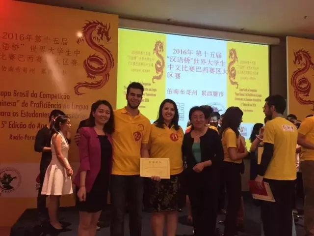

每日一篇——教学案例/巴西商务孔院 王晓雨教学案例自选集
 700
700
来源：原创 作者：王晓雨
【案例1】——爱问问题的“好奇宝宝”——如何应对“问题”学生
【背景】：
我目前带的是通用汉语的初级2，学生是从初级1的老师手中接过来的学生。每次新学期开始后，由于新的老师、新的教学方法，学生和老师之间需要一段时间的磨合和调整，这个学期也是一样。新学期开始上了几周课以后，我花了很长时间终于把班上的各种特点的几个学生“驯服”了，终于适应了自己的节奏和新的教学方法，教学过程更加顺畅、有序。这个时候，教学秘书告诉我有一个新的之前初级1的学生想报名我的课，问我可不可以加入我的班级。有更多的学生加入，我当然很欢迎。
可是，新学生加入不久，教学就出现了问题。由于她是中途加入班级，没有参加前面的课，前几次课虽然主要是帮助他们复习初级1的内容，但是我用了很长时间使他们适应课堂中更多的汉语教学用语和认读汉字。而这个新的学生是一个典型的爱问问题的“好奇宝宝”，她一开始完全听不懂新老师在讲什么，对她来说，初级1的葡语教学一下子变成更多的汉语教学她很不适应，而且一有不懂的问题她就提问。比如说：“老师你可以把每句话都翻译成英语吗？”，“老师，你可以把每句话都写成拼音吗？”，等等。因此我的课经常被打断，思路也被影响，尤其每次在讲重点内容被频频打断时，还产生比较愤怒的情绪，但是得一边控制情绪一边想办法解决，那次课上得很不顺畅。
【问题】：
新加入的学生由于跟不上新课节奏，而且十分爱问问题，而很多问题是由于没有跟上之前的课而造成的知识点的遗漏。如果总是回答她的问题，则会影响别的学生，也影响教学进度；如果对于她的问题置之不理，又会打击这名学生学习的积极性。因此处理类似的学生的问题，需要一个比较合适的办法来权衡课堂整体的需要和个别学生的需求。
【方法】：
对于这个问题，我认真地进行了思考，并与之前带过她的老师进行了沟通，了解情况和她们的处理办法，吸取经验。通过多方面努力，最后不断解决了这个学生的问题，而且还赢得了这个学生对课堂教学的配合。针对这样的学生，需要随机应变。比如，当学生再次提问之前学过的内容时，首先判断一下问题的重要性和与所讲内容的相关性，如果是之前讲过的重要的知识点，则不妨带所有学生再复习一遍，如果与现在所讲的内容相关，则通过回答她的问题再带入现在所讲的内容，这样，既回答了她的问题，又达到了教学目的。
如果学生问的问题很无厘头或者只是由于她的缺课她自己不知道时，则可以问别的学生，如果大家都知道，可以开玩笑的告诉她，下次要来上课才知道问题的答案哦，这样也会让她下次问问题时提前思考，或者自己先问旁边的学生解决。事实证明，这个方法也是很有成效，这名学生之后变得更加有礼貌，不再不经过思考就打断老师讲课的内容，而且也继续保持着提问的积极性，而提问的质量更高了，而且这名学生成了课堂上最积极活跃的爱学习的好学生，也成了我的小粉丝。
【启示】：
对于爱学习的学生，千万不要由于他们某些方面的问题打击他们，而应该因材施教，顺水推舟，寻找一种合适的平衡整体与个体的方法。运用事物的相关性，将有不利的一面转化成有利的一面。无论何时，都要保持一个老师的涵养和对学生的一视同仁，让学生感受到老师的有教无类和真诚。
【案例2】——新丝路上的Fashion——独特的文化视角

【背景】：
一年一度的孔子学院日是每个孔子学院最重要的节日，大家也是绞尽脑汁、各显其能，希望能借孔子学院日让更多的人了解中国文化、汉语和孔子学院。比较常规的做法是举办一些中华文艺表演和传统工艺交流的活动，今年我们孔院有些特殊，选了一个比较冷门的方式，举办图片展和讲座。一开始在听到我们要组织这个活动的时候，我心里是有疑惑的，会有很多人对这种活动形式感兴趣吗？这种活动的氛围和效果会怎么样？他们会喜欢这样的活动，我们会通过这个活动达到我们宣传的目的吗？虽然带着种种疑问，我们孔院还是十分认真地准备着。
这次活动的主题是——丝绸之路图片展和“新丝路”文化讲座。我们通过各种渠道搜集到了很多珍贵的有关丝绸之路的照片，配上文字说明和精美的装饰，图片展初具规模。文化讲座有两部分，一部分是“一带一路”的介绍，还有一部分是关于中国少数民族的介绍。
关于少数民族的介绍是由我们巴方的行政秘书来做，她是意大利人，在中国生活过一年，对中国文化很感兴趣。选这个课题也是她的主意，她由丝绸想到了服饰，进而拓展到少数民族服饰和他们的音乐、食物、生活习惯等。她从一个外国人的角度，介绍了一个外国人眼中的中国，她觉得这些很有意思，所以她也相信其他外国人也会同样感兴趣。
事实证明，她的想法是对的。讲座进行得十分顺利，高潮迭起。一张张生动的PPT展示了美味的少数民族美食，现场不时环绕着特殊的少数民族乐器特别而动听的声音，尤其讲到少数民族服饰时，当由汉语老师和学校巴方同事扮演的临时模特穿着少数民族服饰登台时，现场顿时掌声雷动，尖叫声不断，气氛十分热烈。现场主要呈现了三组服饰，汉服、新疆服饰和内蒙古服饰，我和另外一位汉语老师展现的是汉服。我们一上台就感受到了台下观众的热情 和好奇，我们一本正经得按照古人的礼仪走台、行礼。讲座结束后，观众纷纷要求和我们合影，我们仿佛体验了一把世界名模的走秀，感受到了中国传统服饰的Fashion。这次的讲座和整个活动举办得十分成功，取得了很好的反响。
【启示】：
文化活动的形式很多样，我们应该多发掘一些有意思的点，让外国人了解一个多样化的精彩的中国文化。要想让世界更加了解中国，我们需要先去了解世界，了解其他国家人的兴趣点，推销自己之前先去了解他们的文化需求，做到知己知彼，百战不殆。所以，在做一次文化活动的时候，我们需要多听听各方面的想法和意见，尤其从当地人的角度，一个好的角度会使文化活动事半功倍。
————————————————————
【案例3】——“下星期三见”——词语含义的文化差异
【背景】
我赴任的时候花了很大精力找到一个位置、价格、房型等都很合适的一个公寓，公寓简单舒适，而且房东十分友善。我们相处得很愉快，他们给了我很多帮助，每次房子出现什么问题，房东都想办法帮我解决，他们笑称自己是我在巴西的父母。
可是最近发生的一件事让房东一开始有些不愉快。由于公寓卫生间的洗脸池最近出现了一些问题，水一直下不去。于是，周一的时候我联系了房东，问他们应该怎么解决。他们还是一如既往地很热心，说过来帮我看看。他们和我约了时间：下个星期三（Next Wedsday）下午见，由于我葡语不好，房东也会说点儿英语，所以我们一直都是用英语交流。我看时间合适，便和他们约好下星期三下午我在家等他们。可是到了这周的星期三下午，当时我在外地有个约，而且一直没来得及看手机。当我结束时看到手机有几个未接来电和信息，看了信息后我才知道房东刚来过我家，可是我不在家，他们等了我45分钟我还没来所以他们就走了，而且明显感觉到语气很生气。
我当时很纳闷，不是约好下个星期三下午的吗，怎么这个星期三就来了？我这才想起来，他们葡语中的下个星期三（Proxima Quarta-Feira）是指即将到来的那个星期三，如果本周在星期一或星期二，那就是指本周的星期三。于是，我赶紧打电话给房东解释。
【问题】：
双方由于同一个词语的文化差异以及语言障碍，导致了见面不成功，使被爽约方产生不满情绪。
【解决方法】：
对于此次矛盾的解决，需要当事人对彼此文化进行了解，解释此次误会是由于文化差异产生的，并表示歉意和感谢。
【启示】：
这是一个典型的由于词汇的文化差异引起的不成功的约见。葡语中的下个星期三Proxima Quarta-Feira和汉语中的下个星期三以及英语中的next Wedsday不是同一个概念。由于语言沟通的障碍，双方在使用一种媒介语沟通时，由于双方对同一词语的理解不一样，尤其在约定的时间方面，产生了较大的误会。
从语言学习角度讲，这属于母语负迁移，房东根据自己的母语的含义将其翻译成英语，可是这种翻译的结果并不是同一个含义。其实，在当地不是第一次遇到这种情况，在没有进行系统英语学习的情况下，很多当地人都会有同样的偏误。因此，作为一名汉语老师，在生活中需要进一步了解当地的文化，了解文化差异；在汉语教学中更需要加强跨文化交际的教学，着重强调这种可能产生较大误会的文化差异，避免学生今后去中国时产生类似的困扰。
作者简介：
王晓雨，对外经贸大学孔院专职教师。2015年10月起任外经贸FAAP商务孔子学院汉语教师，从事通用汉语和商务汉语教学工作，并牵头负责汉语桥工作。